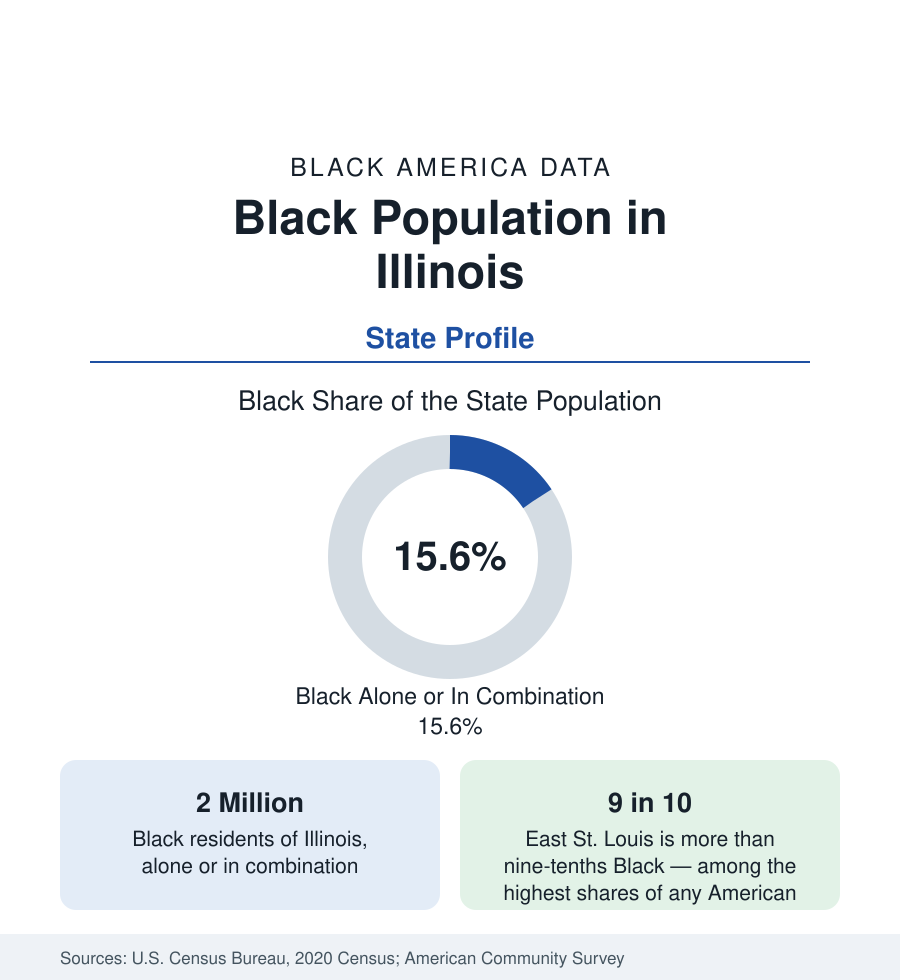

Black Census
Black Population in Illinois: Chicago and the Small Majorities
About 2 million Black Illinoisans — roughly one in six residents — from Chicago's South Side to East St. Louis, one of America's most heavily Black cities.

Illinois holds about 2 million Black residents — Black alone or in combination — roughly one in six of its people, with Black alone at about 1.8 million, or 14 percent. The state's Black geography is a study in concentration: the large majority lives in metropolitan Chicago, profiled in the cities section, but the state's distinctive contribution to the national map lies downstate, in a set of small and mid-sized cities — East St. Louis, Springfield, Rockford, Peoria, Champaign, Cairo — where Black communities formed along the railroads and river towns a century before the great Chicago waves. This article profiles the state population.
Downstate: The Railroad Cities
Illinois's rivers and rails made its small cities Black early. East St. Louis, across the Mississippi from St. Louis, is more than nine-tenths Black — among the highest shares of any city in the nation — a small industrial city whose population has fallen by more than half from its mid-century peak as its industries closed, leaving one of the most difficult municipal datasets in America. Springfield, the state capital, is about a fifth Black, with a community reaching back to the free Black settlements of the 1820s. Rockford, Peoria, Decatur, Champaign-Urbana, and the Quad Cities each hold Black populations in the range of a fifth to a quarter of their cities — manufacturing and university communities whose indicators track the national urban pattern. Cairo, at the state's southern tip where the Ohio meets the Mississippi, was a historic Black river town of national significance in the steamboat era.
The Southern Tier
Illinois's southern counties complicate its Northern image. The state's first constitution-era settlement included slavery in the salt works and a Black population in the southern counties from the territorial period; the region's Black communities — in Pulaski, Alexander, and Williamson counties among others — are old, rural, and small. The state's overall Black share of one in six, modest beside the Deep South profiles, thus spans two Black Americas within one state: the rural southern tier settled in slavery's era and the industrial corridor of the north, joined by the railroads that carried the Great Migration through the downstate towns on its way to Chicago — many of whose passengers stopped, and stayed, at every station on the line.
Institutions
Chicago State University, on the city's South Side, is the state's public predominantly Black university and one of the Midwest's designated HBCU-equivalent institutions; Southern Illinois University's campuses, the University of Illinois system, and the state's community colleges carry the remainder of Black enrollment in the education data. The state's Black political infrastructure — built on Chicago's congressional delegation and extending through the capital — is among the most established in the nation, and its Black professional class, documented in the Chicago profile, is the region's largest. Downstate, the same institutional thinness the rural profiles record elsewhere applies: fewer Black institutions per capita, in communities whose scale cannot support them.
Composition and Change
The estimates record an Illinois Black population that is stable in count and slowly declining in share: Chicago's dynamics dominate — the city's Black population decline and suburban growth chronicled in its profile — while downstate's small cities lose population with their regions. The state's Black indicators, income and attainment and health, run near national Black averages in the metro and below them downstate, and its foreign-born Black population, concentrated in Chicago and its suburbs, is the Midwest's largest, layering African and Caribbean communities over the native-born base.
Reading the Illinois Numbers
The downstate communities also hold a distinction the income tables miss: several — East St. Louis, Cairo, and the old settlements of Brooklyn, Illinois, among the first towns incorporated by Black Americans in the nation — are among the oldest continuous Black municipalities in the United States, governed by Black officials for well over a century, a civic continuity the state's data has recorded longer than any Midwestern peer's.
Illinois teaches the section's concentration lesson in reverse: a state known for one enormous Black metropolis whose full profile requires the small majorities and railroad cities that the Chicago figure hides. The two million divide into roughly three-quarters in one metro and one-quarter scattered across a dozen smaller communities, each with its own census story — and the state average, as ever, belongs to neither.
More in Black Census
The Black Population of the United States: Size, Definitions, and Distribution
The Black population of the United States totals 52.8 million — 15.4 percent of the nation. How the Census Bureau defines and counts the population, and where it lives.
Black Median Household Income in the United States
Black median household income stands at $56,490 in the Census Bureau's annual income report — how the figure is measured, how it compares, and what drives it.
The Black Poverty Rate: Levels, Children, and the Long Trend
The official Black poverty rate is 17.1 percent — against 11.1 percent nationally and 7.7 percent for non-Hispanic White Americans. How poverty is measured and what the data show.
Source: U.S. Census Bureau, 2020 Census; American Community Survey; Population Estimates Program.